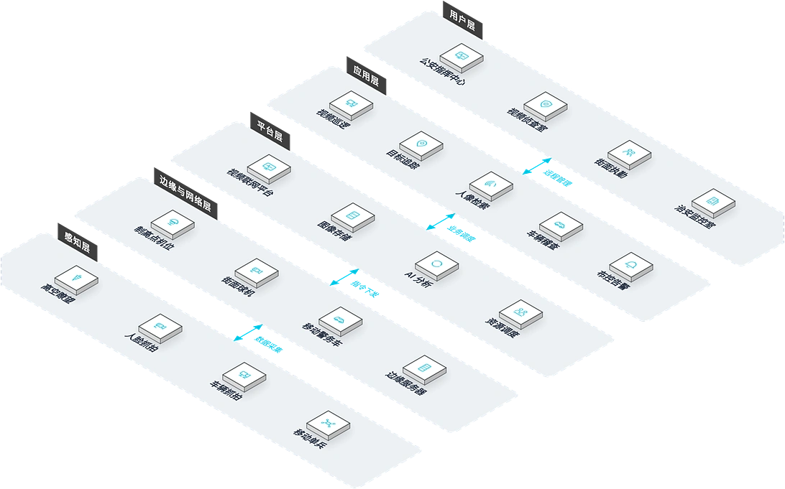

面向城市公共安全管理部门与大型交通枢纽运营方，提供"高空瞭望+低点补盲+空中巡逻"立体防控解决方案，解决城市重点区域监控覆盖不足、事件响应慢、人工盯屏效率低的核心痛点，实现全景视频 AI 监控与快速响应闭环。
方案概述
为城市公共安全管理部门与大型交通枢纽运营方提供立体防控解决方案，解决重点区域监控覆盖不足、事件响应慢、人工盯屏效率低的问题，实现全景视频 AI 监控与快速响应闭环。
适用对象：城市重点区域、大型活动场馆、交通枢纽、森林防火区、海岸线。
- 单台高空瞭望摄像机覆盖半径 3-5 公里，相当于数十台普通摄像机
- AI 智能分析替代人工盯屏，告警准确率超过 95%
- 与无人机系统联动，实现"发现-定位-处置"快速响应
收益：安防运营成本降低，事件响应时间缩短，城市安全覆盖密度提升。
业务挑战
在城市公共安全管理中，客户常面临监控覆盖不足、人工盯屏效率低、事件响应链条长的问题，亟需大范围覆盖、AI 自动预警与快速处置联动的立体防控体系。
监控覆盖不足
普通摄像机单点覆盖范围小，城市制高点与大面积区域盲区多。
人工盯屏效率低
海量视频画面依赖人工监视，疲劳度高、漏报率高。
事件响应链条长
从发现异常到调度处置涉及多个环节，信息传递慢。
立体感知缺失拖累处置
地面监控无法覆盖高空视角，大型活动与突发事件缺乏立体感知，处置决策缺少现场全局信息。
高空大范围瞭望
需要以极少量设备覆盖半径数公里的重点区域。
AI 预警快速闭环
需要异常事件自动发现、自动定位并联动处置资源。
典型场景：
适用角色：公安指挥中心人员、安保管理人员、应急调度人员。
方案架构
城市鹰眼采用五层业务拓扑：公安指挥中心、视频侦查室等在各自办公室通过视频巡逻、目标追踪等应用开展业务，依托平台层统一调度；制高点机位、街面球机等边缘设备部署于现场，就近接入高空瞭望、人脸抓拍等感知设备，数据逐层汇聚、指令逐层下达，实现从管理办公室到现场设备的全链路贯通。

业务化布局：用户层为公安指挥中心、视频侦查室等管理办公室；应用层承载日常业务功能；平台层提供视频联网平台、图像存储等能力；边缘与网络层为制高点机位、街面球机等现场接入位置；感知层为高空瞭望、人脸抓拍等现场部署的设备。父子层级上下贯通，兄弟节点左右并列。
核心模块
高空瞭望监控
城市制高点长焦云台与 360° 全景摄像机，一台覆盖半径 3-5 公里。
AI 智能识别
自动识别人员聚集、车辆违停、火灾烟雾等异常事件，告警准确率超 95%。
无人机联动巡逻
接警后自动起飞赴现场，实时回传画面补充侦查。
告警地图与指挥调度
告警点位上图，视频墙复核，一键调度处置资源。
集成能力：
- 与公安指挥平台对接，实现“发现-研判-调度-处置”快速响应
- AI 智能识别人员聚集、车辆违停、火灾烟雾等异常事件
- 与无人机系统联动，自动起飞赴现场补充侦查
优势与交付
我们以“高空+低点+空中”立体防控理念与 AI 智能分析能力，为城市安防覆盖密度与响应速度的提升提供保障，并通过点位勘察、设备安装、平台部署与运维支持保障落地。
差异化优势
一台顶数十台
单台高空瞭望覆盖半径 3-5 公里，大面积区域监控建设成本大幅下降。
AI 替代人工盯屏
智能分析告警准确率高，漏报率显著降低，值守人员工作强度大幅下降。
空地一体快速闭环
无人机自动起飞联动，实现"发现-定位-处置"快速闭环，响应效率提升。
大型项目验证
已在Mile 2 综合交通枢纽项目等大型项目部署验证，方案成熟度经实践检验。
多源数据融合
高空瞭望、低点卡口、无人机、车载监控多源数据融合，立体防控无死角。
统一指挥调度
AI 分析引擎与指挥调度平台一体化，告警-复核-调度处置全链路贯通。
实施流程
需求调研
明确重点防控区域、事件类型与联动要求。
点位勘察
勘察制高点、低点与无人机机场选址条件。
设备安装
高空瞭望、低点卡口与无人机机场安装部署。
平台部署
AI 分析引擎与指挥调度平台上线。
联调测试
告警-复核-调度处置全链路联调。
培训交付
培训指挥中心值守与调度人员后交付。
服务保障
客户价值
安防运营成本降低，事件响应时间缩短，城市重点区域安防覆盖密度显著提升，为城市公共安全管理提供"天眼"保障。
一年质保
远程运维支持
备件本地储备
平台持续升级
客户案例
Mile 2 综合交通枢纽项目安防系统
背景：Mile 2 综合交通枢纽项目是当地车流与人流高度聚集的交通节点，治安与交通秩序管控压力大。
挑战：枢纽区域面积大、通道复杂，普通监控存在大量盲区，人工盯屏难以及时发现异常。
方案：部署高空瞭望与全景监控设备，配合低点补盲卡口，构建覆盖枢纽全域的立体监控网络。
成果：实现复杂交通环境下的立体化安防保障，为枢纽日常安全管理提供全局视野。